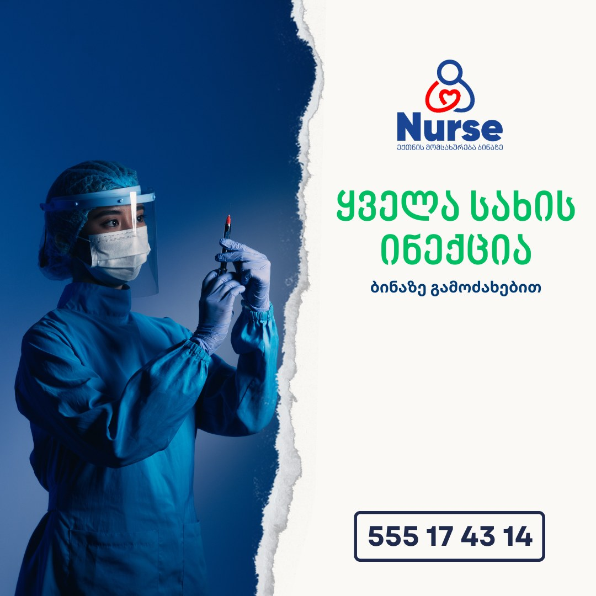
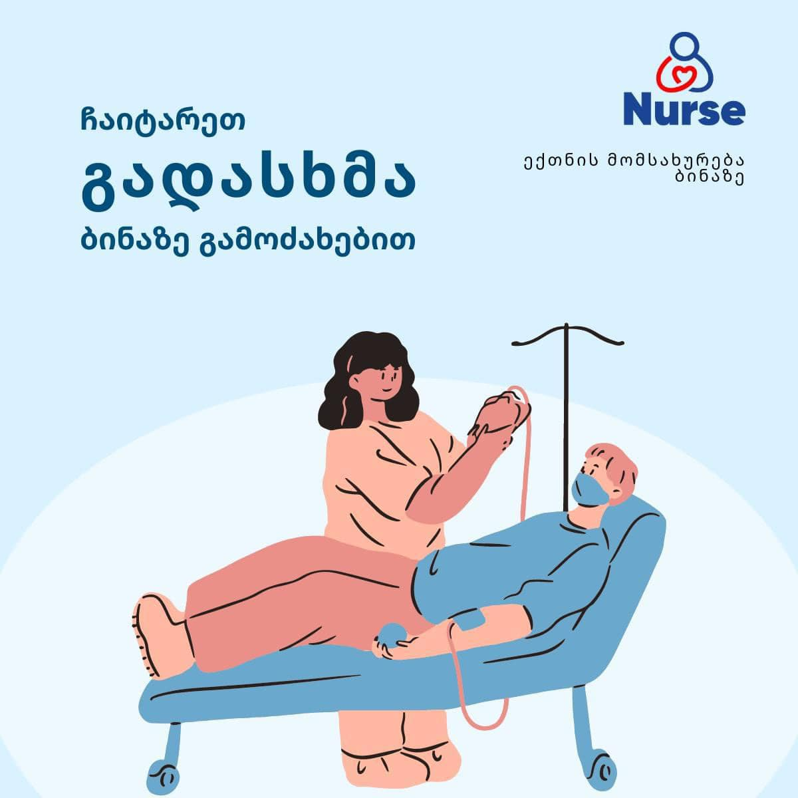
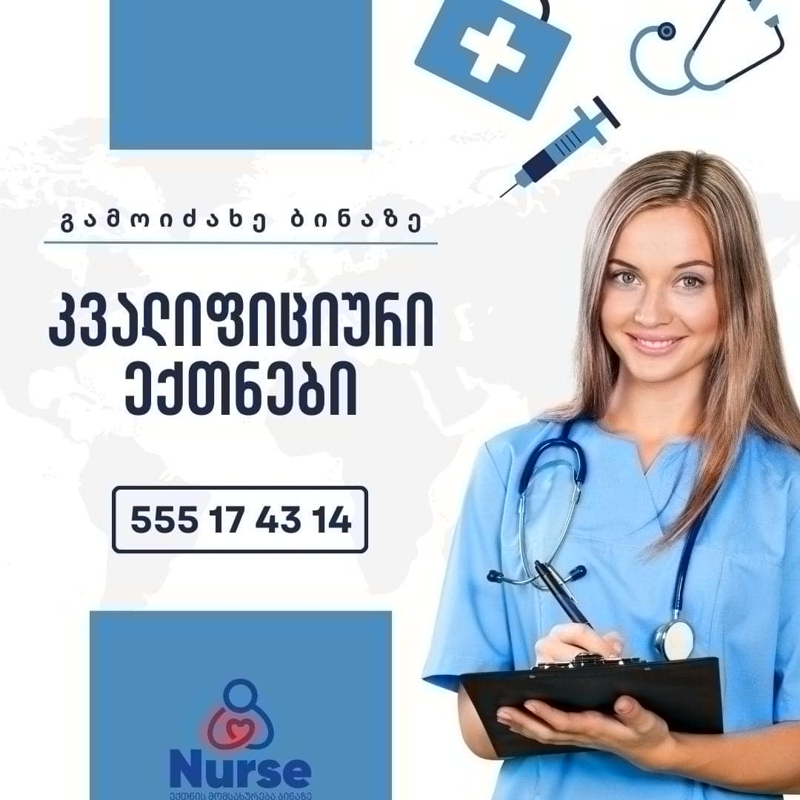

👩⚕️არის შემთხვევები, როცა საქმეს მარტო ვერ გაუმკლავდები!
🙌ასეთი შემთხვევებისთვის არსებობს ჩვენი, პროფესიონალი ექთნებით დაკოპლექტებული გუნდი, რომელიც სახლის პირობებში გაგიწევთ შემდეგ პროცედურებს:
🔹ინექციები ვენაში, კუნთში, კანში და კანქვეშ;
🔹პერიფერიული ვენის კათეტერიზაცია;
🔹ინტრავენური ინფუზია (გადასხმა);
🔹შარდის ბუშტის კათეტერიზაცია;
🔹ჭრილობის დამუშავება, გადახვევა;
🔹ენდოტრაქეალური სეკრეტის ევაკუაცია (სანაცია);
🔹შინმოვლა ბინაზე (მოხუცთა მონიტორინგი);
🔹მორიგეობა ბინაზე (როგორც მძიმე ასევე მსუბუქ პაციენტთან);
🔹რეაბილიტაცია (რეაბილიტოლოგის მომსახურება);
🔹ნაზოგასტრალური ზონდირება;

🩺"ჩვენთან მომართვიანობის ერთ-ერთი ხშირი მიზეზი - ინტრავენური ინფუზია, გადასხმაა. მომხმარებლები სხვადასხვა ჩივილით გვიკავშირდებიან და ადგილზე მისვლით, სწორად შერჩეული სტრატეგიით ვუწევთ ზემოთხსენებულ დახმარებას.
☘ინტრავენური ინფუზია - გადასხმა გამოიყენება შემდეგი მდგომარეობების დროს:
🔹️ექიმის დანიშნულებით;
🔹️საკვებისმიერი ინტოქსიკაცია;
🔹️ალკოჰოლური ინტოქსიკაცია;
🔹️ვირუსული ინფექციები;
🔹დიდი რაოდენობით სითხის კარგვისას (დიარეა, ღებინება);
🔹️ალერგიული რეაქციების დროს;
🔹️ანტიალერგიულ მედიკამენტებთან ერთად;
🔹️კოვიდ ინფექციების დროს;

⚠️"ჭრილობის დასამუშავებლად და მის მოსავლელად საჭიროა - ასეპტიკის წესების ცოდნა და მისი ზედმიწევნითი დაცვა, რომ არ მოხდეს ჭრილობის დაინფიცირება!
👉შეიძლება წარმატებით ჩატარებული ქირურგიული ჩარევა, მისმა შემდგომმა არასწორმა მოვლამ - დააიმფიციროს.
🔹მოგვმართეთ ჩვენ, რათა სრულფასოვნად წარვმართოთ თქვენი და თქვენი ოჯახის წევრის ჯანმრთელობის პროცესი" - მარიტა ბელთაძე ექთანი და მომავალი ექიმი💙